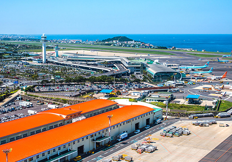

机场及港湾设施
- Home
- 投资环境
- 基础设施
- 机场及港湾设施
济州国际机场


与14个国家的54座城市开通直飞航线，年客运量约达3000万人次，航班数量在韩国仅次于仁川国际机场。
济州国际机场位于济州市，是韩国最佳廉价航空公司“济州航空”的基地机场。据英国航空交通市场咨询公司OAG分析，济州机场也是全球最繁忙的机场之一。
- 年航空客运量为2945万人次（2017年）
- 年航空货运量为266370吨（2017年）
- 14个国家54座城市直飞航线（2017年）

No.1 Global Busiest Domestic Route Jeju(CJU) – Seoul(GMP)
济州(CJU)-首尔(GMP)航线相当繁忙，年提供1700万个座位，相当于平均每天约4.8万个座位。
济州是韩国有名的度假胜地，从首尔始发的航线旅途相对较短（451km），但由于是岛屿，飞机之外的交通选择并不多。
‘Busiest Routes 2020’ OAG(UK)
港湾设施
济州有7座港口和7座码头，具备用于出口济州农林渔业产品等货物和进口物资的货船停靠设施，以及国内渡轮和国际邮轮停靠设施。
济州市和西归浦市共有2座贸易港，整个济州岛共有4座沿海港，附属岛屿秋瓷岛还有1座沿海港。

两个贸易港口[济州港、西归浦港]和五个沿岸港[翰林港、涯月港、城山浦港、和顺港、楸子港]

-
同时靠泊能力-64个泊位
千吨以上泊位 50 个 / 百吨以上泊位14 个 -
最大靠泊能力
游轮 80,000 DWT / 货轮 42,000 DWT -
吞吐量(2019)
2026.3 万吨 -
国际邮轮靠港业绩(2016)
507 次, 1,209,106 人次

-
游艇停靠设施
7 个港口, 94 个泊位